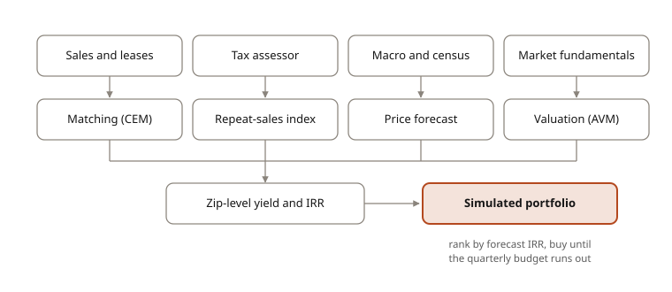

The problem
Build-to-rent and homebuilder deals need a defensible view of which zip codes will deliver the best yield and IRR. The data works against you: the same house rarely sells twice in a short window, most homes have not transacted recently, and tax and rent assumptions vary county by county.

How it works
- Measure growth. Coarsened Exact Matching groups comparable homes (same census tract, similar age, bedrooms and living area) into a synthetic "same house." A Case-Shiller-style repeat-measures regression turns those groups into a same-store growth index for prices and rents. It became the standard growth input across the firm's single-family work.
- Forecast prices. A bagged ensemble of ~100 gradient-boosted models forecasts home price appreciation for ~400 US metros at several horizons. The target is normalized across markets, so the model learns which metros outperform rather than re-learning the national cycle. A residualized short-horizon variant limits reliance on momentum when momentum breaks down.
- Value every home. Two gradient-boosted regressors estimate current price and rent relative to each home's own census tract, then adjust by the metro index. The whole national universe can be valued every quarter, not only homes that recently sold. Validation uses a five-year entry-to-exit backtest rather than in-sample fit.
- Translate into returns. Growth, forecast and valuation chain into zip-level yield and IRR, with effective tax rates derived from assessor microdata instead of a flat assumption.
- Simulate the portfolio. Candidate homes are ranked by forecast IRR and bought until a fixed quarterly budget is exhausted. The simulated portfolio's returns are then compared with realized returns of large institutional single-family owners over the same periods.
Figure planned · "Same house" matching sketch: comparable homes grouped within a census tract
Figure planned · Same-store growth index, prices vs. rents (illustrative, synthetic data)
Figure planned · Portfolio simulation: rank by IRR, fill the budget, compare with a benchmark
Data foundation
When our primary data provider overhauled its systems, I led the team's response: mapped the full schema change, then moved five separate models from ad hoc notebook joins into one managed, validated pipeline with a monitoring tearsheet.
What it enabled
The framework was used directly in build-to-rent and homebuilder deal underwriting as the systematic basis for zip-level selection. TODO: decide whether to describe the benchmark comparison
Skills
- Causal matching (CEM)
- Index construction
- Gradient boosting
- Ensemble forecasting
- Automated valuation
- Portfolio simulation
- Data engineering